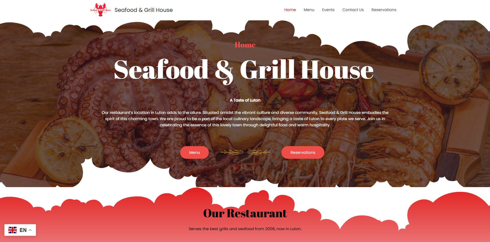
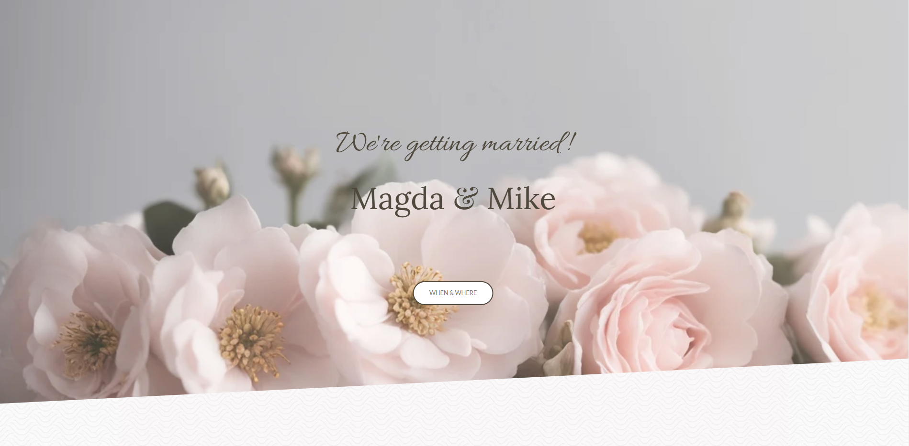
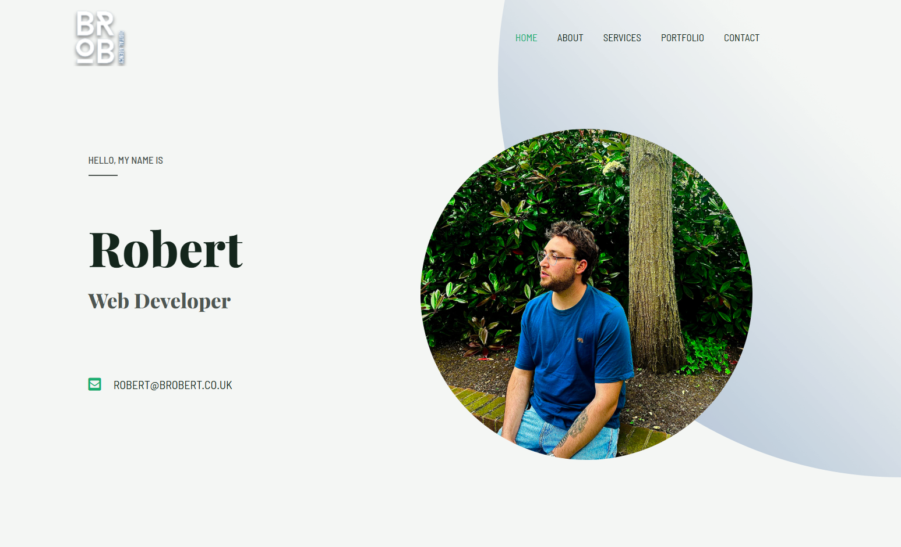
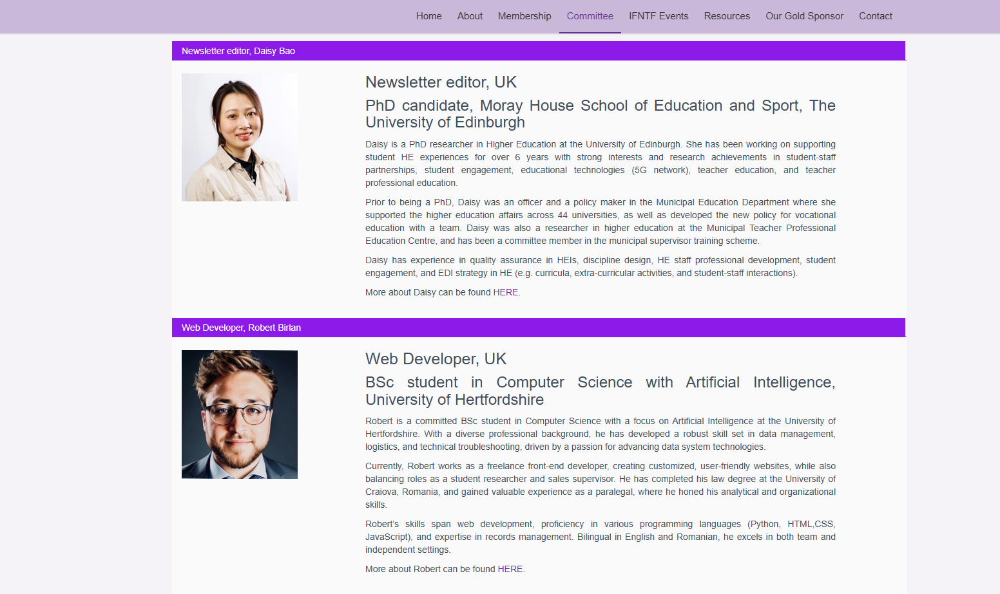

Portfolio
Projects
I take pride in the projects I've done and finished in the last few years. Although I can't encapsulate all of them here, I will provide the ones that in my opinion have formed me and my style in the past.
Here you can find a few of my favourite projects:
-
Seafood and Grill House
Seafood and Grill House is one of my first projects. Created in Wordpress using plugins and templates such as Elementor and Astra it's a restaurant website. Fully functional from 2022, this website has provided a good experience to the customers, have easy to access Menu buttons and Reservations.
-
Wedding Website
My first fully functional website created purely out of code. This website has technologies such as HTML, CSS, JavaScript, SASS/SCSS. While creating the website I've learned to utilize SCSS and separation of files on segments.
-
Wordpress Personal Portfolio
Another WordPress project, created fully with plugins and themes, Elementor and Astra, comes with a fresh view for a personal portfolio. I prefer calling them the future of CV's.
-
IFNTF Developer
This particular website has not been fully developed by me from the beginning. However, in the last two(2) years I was assigned with maintaining the website and developing new areas of it. Using PHP, CSS and JavaScript.